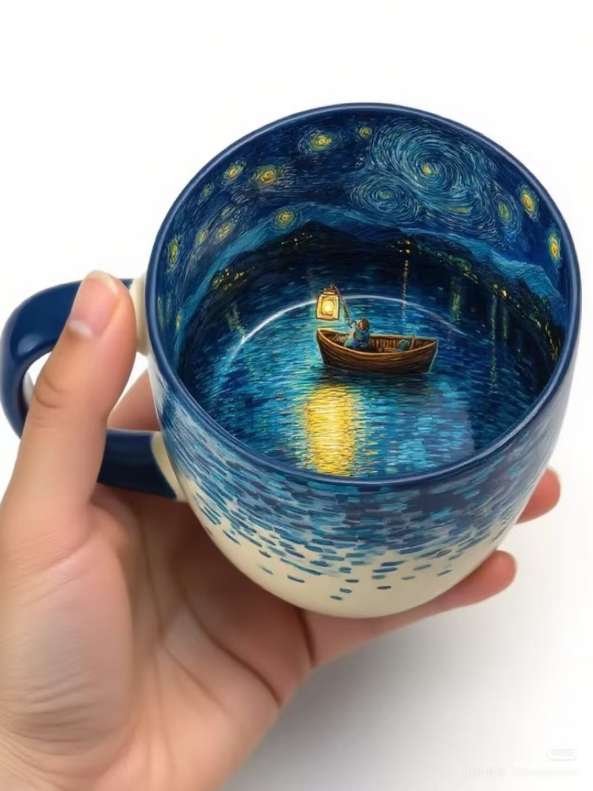

Teardown 10
梵高星空立体人物咖啡杯

用户
喜欢艺术、文创，追求仪式感、喜欢趣味小物件的年轻人，咖啡爱好者
场景
居家/办公室喝咖啡、奶茶，日常喝水，拍照分享
当前方案痛点
普通杯子外观都印在杯外壁，杯内单调，缺少惊喜感；单纯印花文创杯只有静态图案，没有互动趣味，不容易留下记忆点
创意方案
杯子内部绘制《星月夜》漩涡纹理，杯底内置立体梵高小人；倒入饮品之后，液体没过一部分人像，看起来就像梵高在杯子里泡澡，产生有趣的画面感
核心价值
把惊喜藏在杯子内部，倒入液体才会显现完整趣味场景，增强使用时的情绪价值；文创IP不只是表面印刷，利用空间立体造型制造反差感，适合社交平台拍照传播
方案短板与边界
杯内立体凸起结构缝隙容易残留咖啡污渍，清洗难度更高；立体造型更容易磕碰破损；内部凸起会减少杯子实际容量；价格高于普通马克杯
底层设计思想
利用使用动作触发隐藏彩蛋，在产品内部预埋场景，在用户使用的瞬间才展现趣味，制造情绪惊喜，提升产品记忆点
同思想延伸案例
- 遇热变色马克杯：倒入热水才显现隐藏图案
- 底部带小彩蛋的啤酒杯：喝完酒才能看见杯底图案
- 海浪彩蛋碗：碗底隐藏小动物，食物吃完才露出来
AI 机会迁移
在用户的使用流程中，设置阶段性惊喜反馈；不是一次性把全部信息展示，等用户完成关键操作后，才揭示彩蛋，提升用户体验和分享意愿